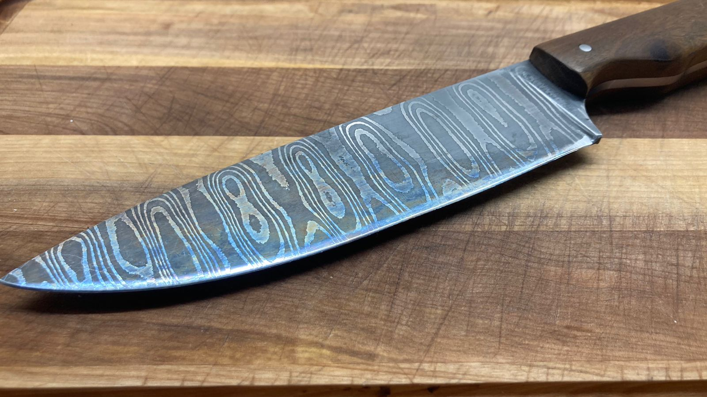

ACERO DE DAMASCO + EMPUÑADURA MADERA GAPACHO
Es uno de los aceros mas antiguos conocidos, se tiene conocimiento desde la época Alejandro Magno, entorno a la año 323 A.c e incluso antes. Existen principalmente varias formas de obtenerlo, la tradicional, acero wootz (ó acero bulat, versión rusa), y la actual, se fabrica a partir de diferentes tipos de aceros, con los cuales conformar un billete a partir del cual comenzar a trabajar para formar los diferentes patrones.
Los patrones básicos son: random, ladder, twist y raindrop..